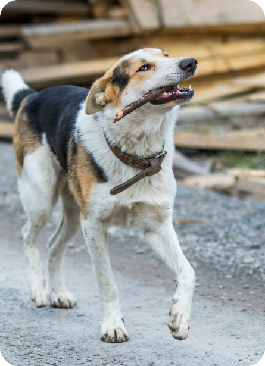

Кондопога
Вместе
Барон - статный мужчина. Ищет человека для серьезных длительных отношений. Со своей стороны гарантирует море ласки и любви. Барон очень любит детей, с энтузиазмом выучит новые команды, это сильный и выносливый спутник.

Ему примерно 6 лет и он еще готов удивлять своего будущего наставника.
Благородных кровей, хорошо воспитан, в еде не привередлив), здоров (кастрирован, привит). Вредных привычек нет, одни полезные.
Барон - статный мужчина. Ищет человека для серьезных длительных отношений. Со своей стороны гарантирует море ласки и любви. Барон очень любит детей, с энтузиазмом выучит новые команды, это сильный и выносливый спутник.
Ему примерно 6 лет и он еще готов удивлять своего будущего наставника.
Благородных кровей, хорошо воспитан, в еде не привередлив), здоров (кастрирован, привит). Вредных привычек нет, одни полезные.